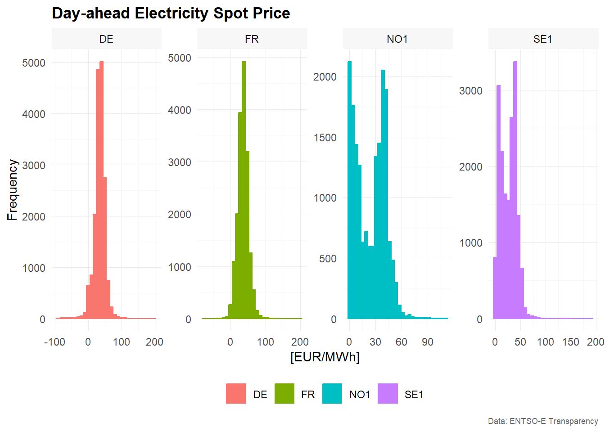

Visualization of Time Series Data
Alexander Häußer
Dezember 2021
Source:vignettes/vignette_03_data_visualization.Rmd
vignette_03_data_visualization.RmdYou can install the development version from GitHub with:
# install.packages("devtools")
devtools::install_github("ahaeusser/tscv")Data
series_id = "bidding_zone"
value_id = "value"
index_id = "time"
context <- list(
series_id = series_id,
value_id = value_id,
index_id = index_id
)
# Prepare data set
main_frame <- elec_price %>%
filter(bidding_zone %in% c("DE", "FR", "NO1", "SE1"))
main_frame
#> # A tibble: 70,176 x 5
#> time item unit bidding_zone value
#> <dttm> <chr> <chr> <chr> <dbl>
#> 1 2019-01-01 00:00:00 Day-ahead Price [EUR/MWh] DE 10.1
#> 2 2019-01-01 01:00:00 Day-ahead Price [EUR/MWh] DE -4.08
#> 3 2019-01-01 02:00:00 Day-ahead Price [EUR/MWh] DE -9.91
#> 4 2019-01-01 03:00:00 Day-ahead Price [EUR/MWh] DE -7.41
#> 5 2019-01-01 04:00:00 Day-ahead Price [EUR/MWh] DE -12.6
#> 6 2019-01-01 05:00:00 Day-ahead Price [EUR/MWh] DE -17.2
#> 7 2019-01-01 06:00:00 Day-ahead Price [EUR/MWh] DE -15.1
#> 8 2019-01-01 07:00:00 Day-ahead Price [EUR/MWh] DE -4.93
#> 9 2019-01-01 08:00:00 Day-ahead Price [EUR/MWh] DE -6.33
#> 10 2019-01-01 09:00:00 Day-ahead Price [EUR/MWh] DE -4.93
#> # ... with 70,166 more rowsLine charts
# Example 1 -------------------------------------------------------------------
main_frame %>%
plot_line(
x = time,
y = value,
color = bidding_zone,
facet_var = bidding_zone,
title = "Day-ahead Electricity Spot Price",
subtitle = "2019-01-01 to 2020-12-31",
xlab = "Time",
ylab = "[EUR/MWh]",
caption = "Data: ENTSO-E Transparency"
)
# Example 2 -------------------------------------------------------------------
main_frame %>%
plot_line(
x = time,
y = value,
color = bidding_zone,
title = "Day-ahead Electricity Spot Price",
subtitle = "2019-01-01 to 2020-12-31",
xlab = "Time",
ylab = "[EUR/MWh]",
caption = "Data: ENTSO-E Transparency"
)
Bar charts
# Estimate sample partial autocorrelation function
corr_pacf <- estimate_pacf(
.data = main_frame,
context = context,
lag_max = 30
)
corr_pacf
#> # A tibble: 120 x 5
#> bidding_zone type lag value sign
#> <chr> <chr> <int> <dbl> <lgl>
#> 1 DE PACF 1 0.948 TRUE
#> 2 DE PACF 2 -0.437 TRUE
#> 3 DE PACF 3 0.00539 FALSE
#> 4 DE PACF 4 0.0735 TRUE
#> 5 DE PACF 5 0.0735 TRUE
#> 6 DE PACF 6 0.0898 TRUE
#> 7 DE PACF 7 0.119 TRUE
#> 8 DE PACF 8 0.0786 TRUE
#> 9 DE PACF 9 0.0820 TRUE
#> 10 DE PACF 10 0.0469 TRUE
#> # ... with 110 more rows
# Visualize PACF as correlogram
corr_pacf %>%
plot_bar(
x = lag,
y = value,
color = sign,
facet_var = bidding_zone,
position = "dodge",
title = "Sample autocorrelation function",
xlab = "Lag",
ylab = "Correlation",
caption = "Data: ENTSO-E Transparency"
)
Distributions
Histograms
# Example 1 -------------------------------------------------------------------
main_frame %>%
plot_histogram(
x = value,
color = bidding_zone,
title = "Day-ahead Electricity Spot Price",
xlab = "[EUR/MWh]",
ylab = "Frequency",
caption = "Data: ENTSO-E Transparency"
)
#> `stat_bin()` using `bins = 30`. Pick better value with `binwidth`.
# Example 2 -------------------------------------------------------------------
main_frame %>%
plot_histogram(
x = value,
color = bidding_zone,
facet_var = bidding_zone,
facet_nrow = 1,
title = "Day-ahead Electricity Spot Price",
xlab = "[EUR/MWh]",
ylab = "Frequency",
caption = "Data: ENTSO-E Transparency"
)
#> `stat_bin()` using `bins = 30`. Pick better value with `binwidth`.
Density
# Example 1 -------------------------------------------------------------------
main_frame %>%
plot_density(
x = value,
color = bidding_zone,
title = "Day-ahead Electricity Spot Price",
xlab = "[EUR/MWh]",
ylab = "Density",
caption = "Data: ENTSO-E Transparency"
)
# Example 2 -------------------------------------------------------------------
main_frame %>%
plot_density(
x = value,
color = bidding_zone,
facet_var = bidding_zone,
facet_nrow = 1,
title = "Day-ahead Electricity Spot Price",
xlab = "[EUR/MWh]",
ylab = "Density",
caption = "Data: ENTSO-E Transparency"
)
QQ-Plot
# Example 1 -------------------------------------------------------------------
main_frame %>%
plot_qq(
x = value,
color = bidding_zone,
title = "Day-ahead Electricity Spot Price",
xlab = "Theoretical Quantile",
ylab = "Sample Quantile",
caption = "Data: ENTSO-E Transparency"
)
# Example 2 -------------------------------------------------------------------
main_frame %>%
plot_qq(
x = value,
color = bidding_zone,
facet_var = bidding_zone,
title = "Day-ahead Electricity Spot Price",
xlab = "Theoretical Quantile",
ylab = "Sample Quantile",
caption = "Data: ENTSO-E Transparency"
)